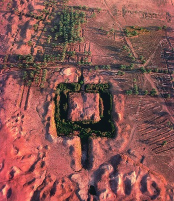
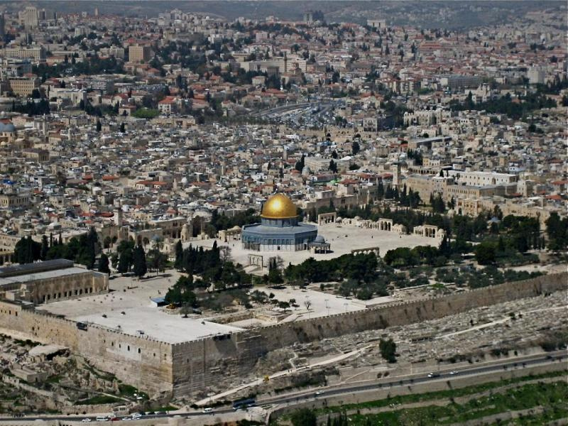
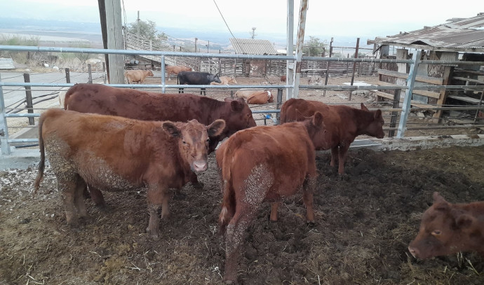

In Genesis 11, some of the freshly postdeluvian peoples of the Bible settled in the Land of Shinar and set their sights high; "Come, let's build ourselves a city, and a tower whose top will reach into heaven, and let's make a name for ourselves" [11:4]. So begins one of the most emblematic and classic tales of human HUBRIS. Many of you already know the story: using fire-baked mud bricks for stones and tar (or in many translations "pitch") as mortar, they began construction of a city with a mighty central tower they hoped would eventually reach heaven, placing them alongside God, and they poured all of their God-given ingenuity into the project. But as with every act of hubris, it was destined for failure.
After God saw the city and the tower, He confounded the languages of these men to dissuade them from further architectural follies and to realize their fears of being "scattered abroad over the face of all the earth" [11:4]. Can you imagine calling to your coworker for a tool only to be met suddenly with another language? The resulting chaos would have dissolved this united population very quickly, resulting in Babel, or what would become the name of the tower forevermore. The Bible does not specify the height of the tower or its stage of completeness when this event occurred, though the extrabiblical Book of Jubilees claims it was finished and stood 1.6 miles high (about three times the height of the world's tallest building, the Burj Khalifa) [10:21]. Many modern scholars believe the ruins of the ziggurat at Etemananki is the location of Babel, but the disputed height of this structure is between only 200 and 300 feet.

The ruins at Etemenanki
Almost all of the stories in the Bible are told in a way that is both a historical record and also a metaphorical message to Believers throughout many periods of history. It is no coincidence that Babel shares an etymology with Babylon, the metaphorical location of modern apostasy in Biblical prophecy [Rev. 17:2-6, 18:1-5]. Just as the Days of Noah are used as a metaphor for the Time of the End [Matt. 24:37-40], so is Babylon a metaphor for the state of the world that all Latter Rain Christians will find themselves in during the Time of Trouble (for those unaware, that is approximately the time we find ourselves in right now). This means that, like many of the stories in Scripture, the Tower of Babel holds metaphorical significance to Believers today.
***
In September of 2022, five cows were transported from Texas to Israel. This may not sound like much, but these cows carry great and terrible significance to many. They are the red heifers. The mere mention of them to those familiar will immediately bring about fervent excitement, but most people don't even know they exist or why they are special.
In Numbers 19 and Mishnah's Parah tractate of the Oral Torah, strict instructions appear that establish the red heifer as a sacrifice for ritual purification. These guidelines include parameters for age, hoove and horn color, hair length and straightness, and even the count of non-red hairs. If two black or white hairs appear next to each other, the cow is disqualified from ritual use. When taken in totality, these precise rules dictate that only a statistical anomaly can be used for such purposes. What purposes? Establishing purity is the most straightforward answer, but many — like those at the Temple Institute, a Jewish nationalist organization — believe that the ashes of a red heifer are necessary to cleanse Mount Moriah before the construction of a Third Temple in Jerusalem. To the Institute, this new temple would bring about "a new era of universal harmony," though, due to what currently stands where this Third Temple is to be built, this is somewhat hard to believe.

The Dome of the Rock
The destruction of Al Aqsa mosque would significantly fuel tensions in the region, if not ignite World War III. In fact, one of the reasons Hamas gave for the October 7th attack (dubbed the "Al Aqsa Flood") was the arrival of the heifers in Israel. But perhaps an explosion of violence is just what some of the interested parties are looking for. The arrival of five blemishless cows would not have been possible without selective breeding of American Red Angus by Evangelical Christian rancher Byron Stinson, who on his website openly rejoices for a soon appearance of the Antichrist in the Third Temple upon its completion. You may think this an odd stance for a Christian, but indeed many Evangelicals wait in restless anticipation of nefarious evil powers being revealed and even escalatory conflict in the Middle East due to grievous misinterpretations of Biblical Prophecy. To many of them, Jesus cannot return until prophecies about the Antichrist and Armageddon are complete, leading them to act as though they wish these events to come to pass purely because they support them intrinsically.
This union of Evangelical American Christians and extreme zionist rabbis is downright cynical. One party is actively wishing violence and forceful conversion on their partners in deed, while the other is cooperating with people who actively despise them to get what they both want. Both of them seem to relish the idea of violent ends awaiting them upon their current path.
But perhaps worse still is the methodology of this process, which is wholly based around skirting laws and ordinances. For instance, livestock trade between America and Israel is illegal, so the respective parties transported the heifers as 'pets' via commercial airline travel. Why must 'God's Will' be done through legal loophole? Simply put: if God created a purification ritual for the ancient Hebrews that required an exceedingly rare biological oddity, then He did so with good reason. The red heifer was not meant to be bred for sacrifice on man's terms; it was meant to herald a generational shift in religious zeal on God's terms. Likewise, God's prophecies about the End of Days were given to Believers so that we may be supernaturally prepared to recognize and strengthen ourselves for them, not so that we may attempt to orchestrate them ourselves to hasten Christ's return.
This is HUBRIS: to suggest that we are in control, not God. To say "let's make a name for ourselves." To take matters into our own hands, when God has a reason for delaying what we think we need immediately. Rest assured that things will not end well for our misguided brothers and sisters working tirelessly on this doomed project, just as they did not end well for the people of Babel.
Similarly, many of us are acting upon this same hubris. It infects almost all aspects of religious movement today. Because we have not been reminded of God's true power for some time, we believe ourselves to be equally able to mold the world and affix our name unto it as God has done. But soon He will remind us why His Name is above all, and we will receive the rewards for our crimes.
-- Evila

The five heifers at an undisclosed location in the West Bank